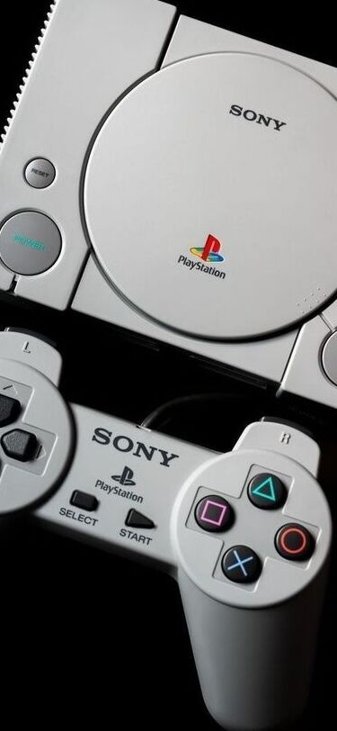
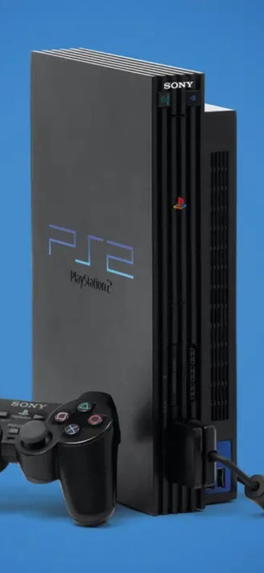
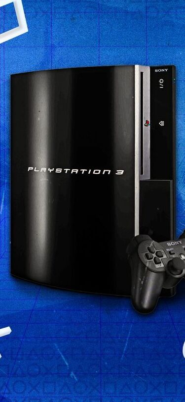
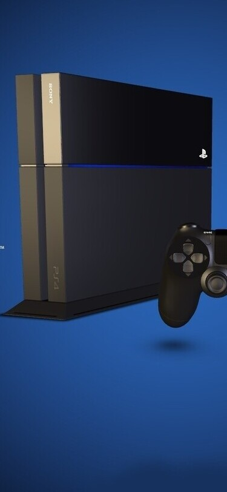
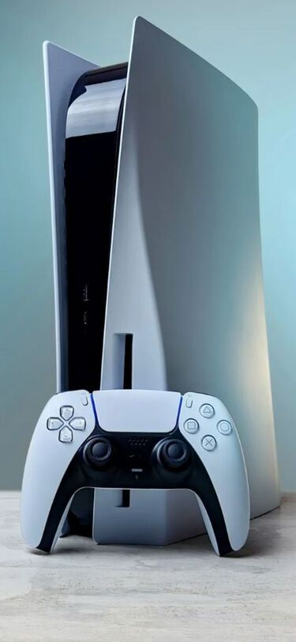

PlayStation (PS1)
O primeiro PlayStation foi lançado pela Sony em 1994 no Japão e 1995 no restante do mundo. O console marcou a entrada da Sony no mercado de videogames e revolucionou a indústria ao popularizar jogos em CD, permitindo gráficos 3D mais avançados e jogos maiores. Durante sua vida útil, recebeu títulos muito importantes como Final Fantasy VII, Metal Gear Solid e Resident Evil, que ajudaram a definir o padrão dos jogos modernos. O console foi produzido até 2006, vendendo mais de 100 milhões de unidades no mundo.

PlayStation 2 (PS2)
O PlayStation 2 foi lançado em 2000 e se tornou o console mais vendido da história, com mais de 155 milhões de unidades. Ele trouxe melhorias gráficas significativas e também funcionava como leitor de DVD, algo muito popular na época. O console teve uma biblioteca enorme de jogos. Alguns dos jogos mais marcantes foram Grand Theft Auto: San Andreas, God of War, Shadow of the Colossus e Resident Evil 4. O PS2 teve uma vida muito longa e só parou de ser produzido em 2013.

PlayStation 3 (PS3)
O PlayStation 3 foi lançado em 2006 e trouxe grandes avanços tecnológicos, incluindo o leitor Blu-ray e suporte a jogos em alta definição (HD). Também foi o console que popularizou os serviços online da Sony através da PlayStation Network. Entre os jogos mais importantes estão The Last of Us, Uncharted 2: Among Thieves e Gran Turismo 5. O PS3 vendeu cerca de 87 milhões de unidades e foi descontinuado em 2017.

PlayStation 4 (PS4)
O PlayStation 4 foi lançado em 2013 com foco em desempenho para jogos e integração online. Ele trouxe gráficos muito mais avançados, recursos de compartilhamento de gameplay e uma forte biblioteca de jogos exclusivos. Entre os títulos mais famosos estão God of War, Marvel's Spider-Man e Horizon Zero Dawn. O console foi um enorme sucesso e vendeu mais de 117 milhões de unidades.

PlayStation 5 (PS5)
O PlayStation 5 foi lançado em 2020 e representa a geração atual de consoles da Sony. Ele trouxe grandes avanços como SSD ultrarrápido, suporte a ray tracing, gráficos em 4K e o novo controle DualSense, que possui feedback tátil e gatilhos adaptáveis. Entre os jogos populares da nova geração estão Demon's Souls, Spider-Man: Miles Morales e Ratchet & Clank: Rift Apart. O console continua em produção e recebendo novos jogos e atualizações.